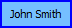

Une fiche d'identité est un composant graphique qui représente une personne. Il peut être déplacé à travers l'Espace de travail avec la souris. Les apparences par défaut sont :
Le texte affiché par les fiches est le nom complet de la personne.
Lorqu'une carte est sélectionnée, sa bordure change de couleur (bleue
par défaut).
Ex. : 
Prochain sujet : Liens